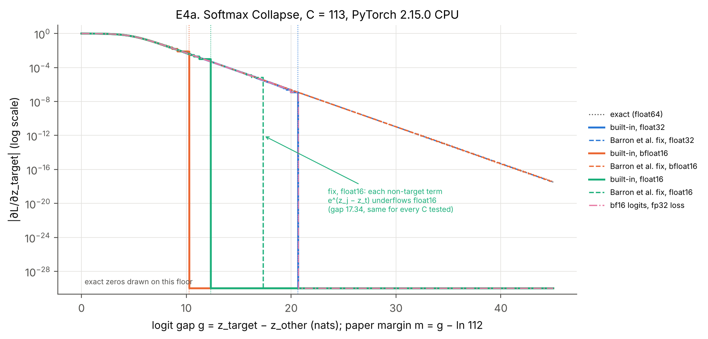
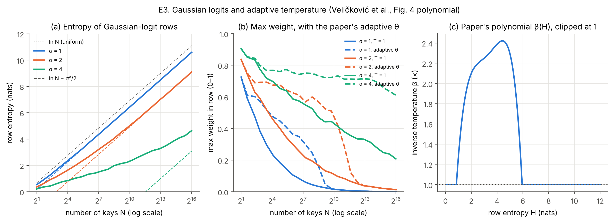
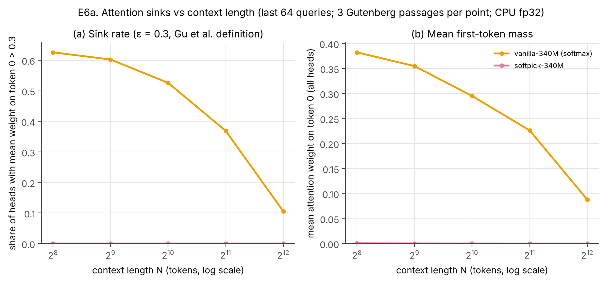
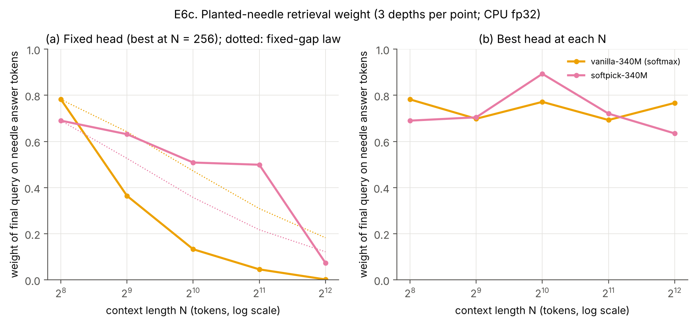

<title>Softmax in LLM Serving Draft</title>
<meta name="claude:viewport-fit-sides" content="cover">
<style>
/* Layout: one reading column (~72ch); figures may run wider; technical-paper styling with citation preview cards. */
:root{
  --bg:#fbfbf9; --fg:#17191e; --muted:#596070; --rule:#dcdfe4; --accent:#1f5ea8;
  --panel:#eff2f6; --plate:#ffffff; --code-bg:#edf0f4; --card:#ffffff; --card-shadow:rgba(20,30,50,.16);
  --t-proven:#1d6b46; --t-paper:#1f5ea8; --t-config:#6a4c93; --t-measured:#9a5b00; --t-inference:#8a3a3a;
  --f-body:"Source Serif 4", Georgia, "Times New Roman", serif;
  --f-head:"IBM Plex Sans Condensed","Arial Narrow",system-ui,sans-serif;
  --f-mono:"IBM Plex Mono",ui-monospace,Menlo,Consolas,monospace;
}
@media (prefers-color-scheme: dark){:root:not([data-theme="light"]){
  --bg:#14161a; --fg:#e6e7ea; --muted:#a2a8b3; --rule:#2d3139; --accent:#86b6f0;
  --panel:#1c2026; --plate:#ffffff; --code-bg:#1f232a; --card:#1d2128; --card-shadow:rgba(0,0,0,.5);
  --t-proven:#6fd0a0; --t-paper:#86b6f0; --t-config:#c3a6ee; --t-measured:#f0b866; --t-inference:#f09a9a; color-scheme:dark}}
:root[data-theme="dark"]{
  --bg:#14161a; --fg:#e6e7ea; --muted:#a2a8b3; --rule:#2d3139; --accent:#86b6f0;
  --panel:#1c2026; --plate:#ffffff; --code-bg:#1f232a; --card:#1d2128; --card-shadow:rgba(0,0,0,.5);
  --t-proven:#6fd0a0; --t-paper:#86b6f0; --t-config:#c3a6ee; --t-measured:#f0b866; --t-inference:#f09a9a; color-scheme:dark}
body{background:var(--bg);color:var(--fg);font:17px/1.62 var(--f-body);
  padding-left:max(16px,env(safe-area-inset-left,0px));padding-right:max(16px,env(safe-area-inset-right,0px));padding-block:40px 80px}
main{max-width:72ch;margin:0 auto;min-width:0}
h1,h2,h3{font-family:var(--f-head);line-height:1.2;text-wrap:balance;letter-spacing:.005em}
h1{font-size:2.05rem;margin:0 0 .3rem;font-weight:600}
h2{font-size:1.4rem;margin:2.4rem 0 .6rem;padding-top:1rem;border-top:1px solid var(--rule);font-weight:600}
h3{font-size:1.1rem;margin:1.7rem 0 .4rem;font-weight:600}
h1+p strong{font-family:var(--f-head);font-weight:500;color:var(--muted);font-size:1.12rem}
a{color:var(--accent);text-underline-offset:2px;overflow-wrap:anywhere}
a:focus-visible{outline:2px solid var(--accent);outline-offset:2px;border-radius:2px}
hr{border:0;border-top:1px solid var(--rule);margin:1.6rem 0}
code{font-family:var(--f-mono);font-size:.84em;background:var(--code-bg);padding:.08em .3em;border-radius:3px}
pre{background:var(--code-bg);padding:12px 14px;border-radius:6px;overflow-x:auto;font-size:.82rem;line-height:1.5}
pre code{background:none;padding:0}
.table-wrap{overflow-x:auto;margin:1rem 0}
table{border-collapse:collapse;font-size:.84rem;line-height:1.4;min-width:560px;width:100%;font-variant-numeric:tabular-nums}
th,td{border-bottom:1px solid var(--rule);padding:6px 8px;text-align:left;vertical-align:top}
th{font-family:var(--f-head);font-weight:600;font-size:.8rem;letter-spacing:.03em;text-transform:uppercase;color:var(--muted)}
figure{margin:1.8rem 0;width:min(100vw - 32px, 1000px);position:relative;left:50%;transform:translateX(-50%)}
figure .plate{background:var(--plate);border:1px solid var(--rule);border-radius:6px;padding:10px;overflow-x:auto}
figure img{display:block;margin:0 auto;max-width:100%;height:auto}
figcaption{max-width:72ch;margin:.7rem auto 0;font-size:.9rem;line-height:1.5;color:var(--muted)}
figcaption strong{color:var(--fg);font-family:var(--f-head);font-weight:600}
blockquote{background:var(--panel);border-radius:6px;padding:4px 18px;margin:1.4rem 0;font-size:.96rem}
math{font-family:"STIX Two Math","Cambria Math","Latin Modern Math",serif;font-size:1.05em}
.math-block{overflow-x:auto;margin:1rem 0;padding:2px 0}
.tag{font-family:var(--f-mono);font-size:.72em;letter-spacing:.02em;white-space:nowrap;border:1px solid currentColor;border-radius:3px;padding:0 .3em;margin:0 .1em}
.tag-proven{color:var(--t-proven)}.tag-paper{color:var(--t-paper)}.tag-config{color:var(--t-config)}
.tag-measured{color:var(--t-measured)}.tag-inference{color:var(--t-inference)}
.cite{font-family:var(--f-head);font-size:.86em;overflow-wrap:anywhere}
a.cref{text-decoration:none;padding:0 .08em}
a.cref:hover{text-decoration:underline}
ol.refs{font-size:.88rem;line-height:1.45;padding-left:2.2em}
ol.refs li{margin:.5rem 0;scroll-margin-top:24px}
ol.refs li:target{background:var(--panel);border-radius:4px}
ol.refs details{margin-top:.2rem;font-size:.82rem;color:var(--muted)}
ol.refs summary{cursor:pointer;color:var(--accent)}
.vtag{font-family:var(--f-mono);font-size:.78em;color:var(--muted)}
.backlink{font-size:.9rem;color:var(--muted)}
.cite-card{position:absolute;z-index:20;box-sizing:border-box;width:min(380px,calc(100vw - 32px));background:var(--card);color:var(--fg);
  border:1px solid var(--rule);border-radius:8px;box-shadow:0 8px 28px var(--card-shadow);padding:12px 14px;
  font:14px/1.45 var(--f-body)}
.cite-card .cc-title{font-family:var(--f-head);font-weight:600;font-size:15px;line-height:1.25;margin:0 0 4px}
.cite-card .cc-meta{color:var(--muted);font-size:12.5px;margin:0 0 8px}
.cite-card .cc-sum{margin:0 0 8px}
.cite-card .cc-loc{margin:0 0 8px;font-size:13px}
.cite-card .cc-loc span{font-family:var(--f-mono);font-size:11.5px;color:var(--muted);text-transform:uppercase;letter-spacing:.04em}
.cite-card .cc-links{display:flex;gap:14px;flex-wrap:wrap;font-family:var(--f-head);font-size:13px}
@media (max-width:520px){body{font-size:16px} h1{font-size:1.7rem}}
@media (prefers-reduced-motion: reduce){*{scroll-behavior:auto}}
</style>
<link rel="preconnect" href="https://fonts.googleapis.com">
<link rel="preconnect" href="https://fonts.gstatic.com" crossorigin>
<link rel="stylesheet" href="https://fonts.googleapis.com/css2?family=IBM+Plex+Mono:wght@400;500&family=IBM+Plex+Sans+Condensed:wght@500;600&family=Source+Serif+4:ital,opsz,wght@0,8..60,400;0,8..60,600;1,8..60,400&display=swap">
<main>
<h1>Softmax Numerics and Attention Sinks in LLM Serving</h1>
<p><strong>A reproduction and measurement study</strong></p>
<p><em>Tata Vishnu Vardhan Rao · Anurag University, Hyderabad · November 2026 · <strong>working draft</strong> · code, data and logs published with this page</em></p>
<blockquote>
<p><strong>Draft status (4 Nov 2026).</strong> This draft uses every result available in the session so far. Real-model results cover the matched vanilla/softpick 340M pair only; SmolLM2-360M, Qwen3-0.6B and Gemma-3-1B-it are still running, and E7 (log-prob precision on real text) has not run yet. Sections that depend on them are marked <strong>Pending</strong>. The GPU experiments (B4–B6) are scripts that have not been run.</p>
<p><strong>Abstract.</strong> Serving engines compute softmax in every attention head and in the vocabulary head. We re-test four published claims about it: dispersion with growing context and an adaptive-temperature fix, first-token attention sinks, Softmax Collapse, and Softmax Cancellation. We use fine-grid CPU reproductions and the papers' own published code. Three findings: the published collapse cliffs (5.5, 16.6, 36.7) are two-class values, and CPU PyTorch collapses up to 2.1 nats earlier with ≥113 classes; the adaptive-temperature polynomial only acts for row entropies of 0.85–5.95 nats; in a matched 340M pair, the softmax model's sink rate falls from 0.63 to 0.11 between 256 and 4,096 tokens, while softpick shows none. We also locate where vLLM and SGLang compute returned log-probabilities; SGLang's RL on-policy mode uses bfloat16. Code, data and validation logs are released.</p>
</blockquote>
<h2>1 Introduction</h2>
<p>A served language model evaluates softmax in every attention head and again in the vocabulary head. Recent papers make four claims about it that matter for serving:</p>
<ul>
<li>global attention must disperse as context grows, and an entropy-based adaptive temperature partly counters this <span class="cite">[<a class="cref" href="#ref-velickovic" data-ref="velickovic" data-loc="§2–3">1</a>]</span>;</li>
<li>the first-token attention sink is a learned mechanism, strongest in large, long-context models <span class="cite">[<a class="cref" href="#ref-barbero" data-ref="barbero" data-loc="§3–4">2</a>]</span>;</li>
<li>standard cross-entropy has a "precision cliff" beyond which the target gradient is exactly zero (Softmax Collapse) <span class="cite">[<a class="cref" href="#ref-prieto" data-ref="prieto" data-loc="§3.1">3</a>, <a class="cref" href="#ref-barron" data-ref="barron" data-loc="§2">4</a>]</span>;</li>
<li>soft-target cross-entropy leaves a non-zero gradient when student and teacher agree (Softmax Cancellation) <span class="cite">[<a class="cref" href="#ref-barron" data-ref="barron" data-loc="§3">4</a>]</span>.</li>
</ul>
<p>Serving engines inherit these behaviours. Eviction policies decide which keys to keep <span class="cite">[<a class="cref" href="#ref-streamingllm" data-ref="streamingllm" data-loc="§3">5</a>]</span>, kernels fold learned sinks into the normaliser <span class="cite">[<a class="cref" href="#ref-flashattn" data-ref="flashattn" data-loc="softmax.py">6</a>]</span>, and RL trainers consume returned log-probabilities <span class="cite">[<a class="cref" href="#ref-sglang" data-ref="sglang" data-loc="sampler.py">7</a>]</span>.</p>
<p>This paper re-tests the four claims and measures the related behaviour in five open models. It proposes no new method. Following the reproducibility-report format used at TMLR and the ML Reproducibility Challenge <span class="cite">[<a class="cref" href="#ref-lico" data-ref="lico" data-loc="§2">8</a>]</span>, each claim is stated with its source, tested, and given a verdict. Following measurement papers on LLM serving <span class="cite">[<a class="cref" href="#ref-etalon" data-ref="etalon" data-loc="§3.1">9</a>, <a class="cref" href="#ref-measbias" data-ref="measbias" data-loc="§4">10</a>]</span>, we report where a standard computation returns a misleading number. Our contributions:</p>
<ol>
<li><strong>Reproduction of four claims</strong> on CPU PyTorch, with fine grids, float64 and 50-digit references, and the papers' own published code translated line by line (§4).</li>
<li><strong>Real-model measurements</strong> of sink strength, attention entropy, planted-needle retrieval and log-probability precision in five open models. Among them is a matched softmax/softpick pair released by the softpick authors <span class="cite">[<a class="cref" href="#ref-softpickckpt" data-ref="softpickckpt" data-loc="">11</a>]</span>. Every probe is validated bit for bit against the reference attention implementation (§3, §5).</li>
<li><strong>An audit of how vLLM and SGLang compute returned log-probabilities</strong>, with the one configuration where a bfloat16 failure is expected (§5.3).</li>
<li><strong>Scripts for the GPU experiments</strong> that remain: serving-engine log-probs, sink pinning under window eviction with a pre-registered criterion, and CUDA thresholds (§8).</li>
</ol>
<h2>2 Claims checked</h2>
<p><strong>Table 1.</strong> Claims, where they are stated, and our verdicts (details in §4–5).</p>
<div class="table-wrap"><table>
<thead>
<tr>
<th>#</th>
<th>Claim (paraphrased)</th>
<th>Source</th>
<th>What we test</th>
<th>Verdict</th>
</tr>
</thead>
<tbody>
<tr>
<td>C1a</td>
<td>With bounded logits, every global-attention coefficient is Θ(1/n) as items n grow</td>
<td><span class="cite">[<a class="cref" href="#ref-velickovic" data-ref="velickovic" data-loc="Lemma 2.1, Thm. 2.2">1</a>]</span></td>
<td>Closed form vs float64; five real models</td>
<td>Pending (2 of 5 models): the fixed-gap law does not describe a single head; other heads take over</td>
</tr>
<tr>
<td>C1b</td>
<td>Adaptive temperature, set from row entropy by a fitted polynomial, sharpens attention at inference</td>
<td><span class="cite">[<a class="cref" href="#ref-velickovic" data-ref="velickovic" data-loc="§3, Fig. 4, Table 1">1</a>]</span></td>
<td>The printed polynomial on synthetic rows</td>
<td>Holds inside the fitted regime; inactive above 5.95 nats</td>
</tr>
<tr>
<td>C2</td>
<td>Strong first-token sinks are common; a non-normalised attention removes them</td>
<td><span class="cite">[<a class="cref" href="#ref-barbero" data-ref="barbero" data-loc="Table 1">2</a>, <a class="cref" href="#ref-gu" data-ref="gu" data-loc="§7">12</a>, <a class="cref" href="#ref-softpick" data-ref="softpick" data-loc="Fig. 1">13</a>]</span></td>
<td>Sink rate and first-token mass in five models</td>
<td>Holds in the matched pair (softmax 62.6% at 256 tokens vs softpick 0%); 3 models pending</td>
</tr>
<tr>
<td>C3</td>
<td>Cross-entropy's target gradient rounds to zero beyond a cliff c ≈ 5.5 (bf16), 16.6 (fp32), 36.7 (fp64); the log-space fix removes it</td>
<td><span class="cite">[<a class="cref" href="#ref-barron" data-ref="barron" data-loc="§1–2, Fig. 1a">4</a>]</span></td>
<td>Built-in vs fixed, three dtypes, C ∈ {2, 113, 1000, 32000, 151936}</td>
<td>Holds for C = 2; earlier cliff for C ≥ 113 on CPU</td>
</tr>
<tr>
<td>C4</td>
<td>Soft-target cross-entropy has a non-zero gradient at z_S = z_T; the fix returns 0</td>
<td><span class="cite">[<a class="cref" href="#ref-barron" data-ref="barron" data-loc="§3, Fig. 1b">4</a>]</span></td>
<td>Built-in vs fixed vs float64/mpmath reference</td>
<td>Holds</td>
</tr>
</tbody>
</table></div>
<h2>3 Methodology and metrics</h2>
<p><strong>Synthetic reproductions (C1b, C3, C4).</strong> These were run on CPU PyTorch 2.15.0, so every threshold below is a property of CPU kernels and may differ on GPUs (B6, §8).</p>
<ul>
<li><strong>C3:</strong> C classes, the target logit at gap g above all others, built-in <code>F.cross_entropy</code>. We scan g on a 0.01 grid, refined to 0.001 near each transition. We report the paper's margin <math xmlns="http://www.w3.org/1998/Math/MathML" display="inline"><mrow><mi>m</mi><mo>&#x0003D;</mo><msub><mi>z</mi><mi>t</mi></msub><mo>&#x02212;</mo><msub><mrow><mi mathvariant="normal">L</mi><mi mathvariant="normal">S</mi><mi mathvariant="normal">E</mi></mrow><mrow><mi>j</mi><mo>&#x02260;</mo><mi>t</mi></mrow></msub><msub><mi>z</mi><mi>j</mi></msub><mo>&#x0003D;</mo><mi>g</mi><mo>&#x02212;</mo><mi>ln</mi><mo stretchy="false">&#x00028;</mo><mi>C</mi><mo>&#x02212;</mo><mn>1</mn><mo stretchy="false">&#x00029;</mo></mrow></math>.</li>
<li><strong>The fixes</strong> are line-by-line translations of the paper's JAX listings <span class="cite">[<a class="cref" href="#ref-barron" data-ref="barron" data-loc="§2–3">4</a>]</span>.</li>
<li><strong>C4:</strong> 1,000 classes. The reference is float64 <math xmlns="http://www.w3.org/1998/Math/MathML" display="inline"><mrow><mi>q</mi><mo>&#x02212;</mo><mi>p</mi></mrow></math> on the same rounded logits, cross-checked against mpmath at 50 digits (maximum difference ≤ 2.6×10⁻¹⁷).</li>
<li><strong>C1b:</strong> the adaptive temperature is applied exactly as printed <span class="cite">[<a class="cref" href="#ref-velickovic" data-ref="velickovic" data-loc="Fig. 4">1</a>]</span>.</li>
</ul>
<p><strong>Real-model probes (C1a, C2).</strong> Five models run in float32 on CPU (Table 2). We registered an attention function with transformers' attention interface. It computes exact softmax (or softpick) attention in query chunks and records statistics as it runs. Before any probe number was used, we checked it against transformers' eager attention: the logits matched bit for bit for all five models. For the matched pair, we also matched an independent forward pass written from the authors' flash-linear-attention code. That check is sensitive: swapping softpick for softmax in the reference changes the logits by up to 30.9. Perplexity on 1,024 held-out tokens (Frankenstein, Project Gutenberg) is 17–40 for all five models, which confirms the weights loaded correctly.</p>
<p><strong>Table 2.</strong> Models probed (configs and validation: <code>data/validate_models.json</code>).</p>
<div class="table-wrap"><table>
<thead>
<tr>
<th>Model</th>
<th>Layers × heads</th>
<th>Attention</th>
<th>Context probed</th>
<th>BOS token</th>
<th>Perplexity (1,024 tokens)</th>
</tr>
</thead>
<tbody>
<tr>
<td>Qwen3-0.6B</td>
<td>28 × 16 (8 KV)</td>
<td>global, QK-norm</td>
<td>256–8,192</td>
<td>none</td>
<td>31.6</td>
</tr>
<tr>
<td>Gemma-3-1B-it</td>
<td>26 × 4 (1 KV)</td>
<td>5 local (window 512) : 1 global, QK-norm</td>
<td>256–8,192</td>
<td><code>&lt;bos&gt;</code></td>
<td>39.9</td>
</tr>
<tr>
<td>SmolLM2-360M</td>
<td>32 × 15 (5 KV)</td>
<td>global</td>
<td>256–8,192</td>
<td>none</td>
<td>17.0</td>
</tr>
<tr>
<td>vanilla-340M</td>
<td>24 × 16</td>
<td>global, softmax</td>
<td>256–4,096 (trained at 4,096)</td>
<td><code>&lt;s&gt;</code></td>
<td>17.3</td>
</tr>
<tr>
<td>softpick-340M</td>
<td>24 × 16</td>
<td>global, softpick</td>
<td>256–4,096 (trained at 4,096)</td>
<td><code>&lt;s&gt;</code></td>
<td>17.1</td>
</tr>
</tbody>
</table></div>
<p><strong>Metrics.</strong> Probe statistics are taken over the last 64 query positions of each sequence.</p>
<ul>
<li><strong>Sink rate:</strong> share of heads whose mean weight on token 0 exceeds ε = 0.3, the definition of Gu et al. <span class="cite">[<a class="cref" href="#ref-gu" data-ref="gu" data-loc="§3">12</a>]</span>. We also give ε = 0.8 <span class="cite">[<a class="cref" href="#ref-barbero" data-ref="barbero" data-loc="Table 1">2</a>]</span>. Gu et al. average over all queries; we average over the last 64.</li>
<li><strong>First-token mass:</strong> mean weight on token 0 over all heads.</li>
<li><strong>Entropy ratio:</strong> mean row entropy on global layers divided by ln(keys visible). It equals 1 for uniform attention. For softpick, entropy is computed on the renormalised row.</li>
<li><strong>Needle weight:</strong> the weight the final query puts on the answer tokens of a planted sentence. We report it for the best head at each N, and for a fixed head (the best head at N = 256). For the fixed-gap law <math xmlns="http://www.w3.org/1998/Math/MathML" display="inline"><mrow><mi>w</mi><mo>&#x0003D;</mo><msup><mi>e</mi><mrow><mi>&#x00394;</mi></mrow></msup><mo>&#x0002F;</mo><mo stretchy="false">&#x00028;</mo><msup><mi>e</mi><mrow><mi>&#x00394;</mi></mrow></msup><mo>&#x0002B;</mo><mi>N</mi><mo>&#x02212;</mo><mn>1</mn><mo stretchy="false">&#x00029;</mo></mrow></math> <span class="tag tag-proven">proven</span>, we report <math xmlns="http://www.w3.org/1998/Math/MathML" display="inline"><mrow><msub><mi>&#x00394;</mi><mi>N</mi></msub><mo>&#x0003D;</mo><mrow><mi mathvariant="normal">l</mi><mi mathvariant="normal">o</mi><mi mathvariant="normal">g</mi><mi mathvariant="normal">i</mi><mi mathvariant="normal">t</mi></mrow><mo stretchy="false">&#x00028;</mo><mi>w</mi><mo stretchy="false">&#x00029;</mo><mo>&#x0002B;</mo><mi>ln</mi><mo stretchy="false">&#x00028;</mo><mi>N</mi><mo>&#x02212;</mo><mn>1</mn><mo stretchy="false">&#x00029;</mo></mrow></math>, which the law keeps constant.</li>
<li><strong>Log-prob precision:</strong> the share of tokens with reference probability &gt; 0.9 whose returned log p is exactly 0.</li>
</ul>
<p>Natural text comes from three Project Gutenberg books (3 passages per point). Needles are inserted at depths 0.25, 0.5 and 0.75.</p>
<h2>4 Reproduction results</h2>
<h3>4.1 C3 — Softmax Collapse</h3>
<figure><div class="plate"></div><figcaption><strong>Figure 1.</strong> Target-logit gradient magnitude versus logit gap, C = 113, CPU PyTorch 2.15.0. Solid: built-in F.cross_entropy; dashed: Barron et al.&#x27;s fixed cross-entropy (translated); dash-dot: bf16 logits with an fp32 loss. Exact zeros are drawn on the floor. Takeaway: each dtype has a sharp cliff; the fix removes it except where fp16 exponentials underflow.</figcaption></figure>
<p><strong>Table 3.</strong> Precision cliff in the paper's margin units: published value vs first exact zero on CPU PyTorch (<code>data/e4_collapse.json</code>, <code>data/e4_fp64.json</code>).</p>
<div class="table-wrap"><table>
<thead>
<tr>
<th>dtype</th>
<th>Published <span class="cite">[<a class="cref" href="#ref-barron" data-ref="barron" data-loc="§1">4</a>]</span></th>
<th>C = 2</th>
<th>C = 113</th>
<th>C = 1,000</th>
<th>C = 32,000 / 151,936</th>
<th>ln(2/ε)</th>
</tr>
</thead>
<tbody>
<tr>
<td>bfloat16</td>
<td>≈ 5.5</td>
<td>5.547</td>
<td>5.564</td>
<td>5.562</td>
<td>5.534 / 5.507</td>
<td>5.545</td>
</tr>
<tr>
<td>float16</td>
<td>—</td>
<td>7.624</td>
<td>7.622</td>
<td>7.621</td>
<td>7.588 / 7.593</td>
<td>7.625</td>
</tr>
<tr>
<td>float32</td>
<td>≈ 16.6</td>
<td>16.636</td>
<td>15.943</td>
<td>15.944</td>
<td>15.943 / 15.943</td>
<td>16.636</td>
</tr>
<tr>
<td>float64</td>
<td>≈ 36.7</td>
<td>36.737</td>
<td>34.658</td>
<td>34.659</td>
<td>— / 34.658</td>
<td>36.737</td>
</tr>
</tbody>
</table></div>
<p><strong>Verdict: holds, with a class-count condition.</strong></p>
<ul>
<li><strong>The published cliffs are the two-class values,</strong> ln(2/ε).</li>
<li><strong>With 113 or more classes, CPU PyTorch collapses earlier:</strong> by 0.69 nats in float32, at ln(1/ε), and by 2.08 nats in float64. bf16 and fp16 stay within 0.04 of ln(2/ε).</li>
<li><strong>The fix works in fp32 and bf16.</strong> It never returns a zero target gradient on [0, 45], with maximum relative error 3.2×10⁻⁷ (fp32) and 9.7×10⁻³ (bf16).</li>
<li><strong>In fp16 the fix still returns zero from gap 17.336, for every C we tested,</strong> because each non-target term <math xmlns="http://www.w3.org/1998/Math/MathML" display="inline"><mrow><msup><mi>e</mi><mrow><msub><mi>z</mi><mi>j</mi></msub><mo>&#x02212;</mo><msub><mi>z</mi><mi>t</mi></msub></mrow></msup></mrow></math> underflows fp16 at that gap.</li>
<li><strong>Realistic mixed precision.</strong> With bf16 logits and an fp32 loss (autocast), the bf16 cliff disappears and the fp32 cliff remains. It appears at grid gap 20.688 because bf16 rounds that gap to 20.75.</li>
</ul>
<h3>4.2 C4 — Softmax Cancellation</h3>
<p><strong>Verdict: holds.</strong> At <math xmlns="http://www.w3.org/1998/Math/MathML" display="inline"><mrow><msub><mi>z</mi><mi>S</mi></msub><mo>&#x0003D;</mo><msub><mi>z</mi><mi>T</mi></msub></mrow></math> the built-in gradient norm is 9.1×10⁻⁹ in fp32, 1.22×10⁻³ in pure bf16 and 2.27×10⁻⁴ in pure fp16; the fix returns exactly 0 in all three (<code>data/e4_cancellation.json</code>).</p>
<ul>
<li><strong>The bf16 floor comes from low-precision storage.</strong> Storing the student's log-softmax in bf16 contributes 1.08×10⁻³; storing the teacher's probabilities in bf16 contributes 3.29×10⁻⁴.</li>
<li><strong>The fp32 floor comes from PyTorch's own gradient path.</strong> ‖softmax − exp(log_softmax)‖ is 5.3×10⁻⁹ in fp32.</li>
<li><strong>Mixed precision lowers the bf16 floor to 2.2×10⁻⁸.</strong> That is teacher probabilities in fp32 and the student upcast before the loss.</li>
</ul>
<h3>4.3 C1b — Adaptive temperature</h3>
<figure><div class="plate"></div><figcaption><strong>Figure 2.</strong> Gaussian-logit rows (20–400 rows per point). (a) Mean entropy vs N. (b) Max weight with and without the paper&#x27;s adaptive θ. (c) The paper&#x27;s polynomial β(H), clipped at 1. Takeaway: the polynomial sharpens only rows with entropy between 0.85 and 5.95 nats.</figcaption></figure>
<p><strong>Verdict: holds inside the regime it was fitted for; inactive beyond it.</strong></p>
<ul>
<li><strong>The printed polynomial gives β &gt; 1 only for row entropy H ∈ [0.849, 5.945] nats</strong> (peak β = 2.42 at H = 4.41).</li>
<li><strong>Inside that window it sharpens a planted target strongly.</strong> A target 4σ above Gaussian distractors rises from 0.125 to 0.798 of the row at N = 235.</li>
<li><strong>From N = 861 the row entropy leaves the window and the correction switches off</strong> (β = 1). With a 6σ target it switches off from N = 1,328.</li>
<li><strong>This is consistent with the paper's own description:</strong> an "ad-hoc" fit derived on its max-retrieval task <span class="cite">[<a class="cref" href="#ref-velickovic" data-ref="velickovic" data-loc="§3, §5">1</a>]</span>. A uniform row over 4,096 keys already has ln 4096 ≈ 8.3 nats, so the polynomial would have to be refitted before use in long-context heads.</li>
</ul>
<h2>5 Real-model measurements</h2>
<h3>5.1 C2 — Attention sinks</h3>
<figure><div class="plate"></div><figcaption><strong>Figure 3.</strong> Sink rate (share of heads with mean weight on token 0 above 0.3) and mean first-token mass vs context length, last 64 queries, 3 Gutenberg passages per point, CPU fp32. Draft: vanilla-340M and softpick-340M only. Takeaway: the softmax model&#x27;s sink weakens as context grows; softpick has none at any length.</figcaption></figure>
<p><strong>Verdict (matched pair): holds.</strong></p>
<ul>
<li><strong>The softmax model has strong sinks.</strong> At 256 tokens, 62.6% of vanilla-340M's heads put more than 0.3 of their weight on token 0. That is close to the 63.41% the softpick authors report for their 340M softmax model <span class="cite">[<a class="cref" href="#ref-softpick" data-ref="softpick" data-loc="Fig. 1">13</a>]</span>. Their averaging may differ from ours, which uses the last 64 queries.</li>
<li><strong>The sink weakens as context grows.</strong> The sink rate falls to 60.2%, 52.6%, 36.9% and 10.6% at 512, 1,024, 2,048 and 4,096 tokens. Mean first-token mass falls from 0.382 to 0.088. Gu et al. also report their sink metric decreasing with sequence length <span class="cite">[<a class="cref" href="#ref-gu" data-ref="gu" data-loc="Fig. 3">12</a>]</span>.</li>
<li><strong>Strong sinks (ε = 0.8) are rare.</strong> They cover 0.6% of heads at 256 tokens and none beyond, below the 45.97% reported for Llama 3.1 8B <span class="cite">[<a class="cref" href="#ref-barbero" data-ref="barbero" data-loc="Table 1">2</a>]</span>. These are much smaller models, so we do not read this as a contradiction.</li>
<li><strong>Softpick has no sinks.</strong> Its sink rate is 0.0% at every length, and its first-token mass is at most 0.001 <span class="cite">[<a class="cref" href="#ref-softpick" data-ref="softpick" data-loc="Fig. 1">13</a>]</span>.</li>
<li><strong>Pending:</strong> SmolLM2-360M (sink rate 0.733 at 256 tokens and 0.424 at 4,096 in the running log), Qwen3-0.6B and Gemma-3-1B-it.</li>
</ul>
<h3>5.2 C1a — Dispersion in real heads</h3>
<figure><div class="plate"></div><figcaption><strong>Figure 4.</strong> Final-query weight on the planted answer tokens vs context length (3 depths per point). (a) The head that is best at N = 256, tracked across N; dotted: the fixed-gap law with Δ fitted at N = 256. (b) The best head at each N. Draft: matched 340M pair only. Takeaway: a fixed head disperses faster than the law predicts in the softmax model, but other heads take over.</figcaption></figure>
<p><strong>Verdict (matched pair): dispersion holds for a fixed head; retrieval survives through head switching.</strong></p>
<ul>
<li><strong>The fixed-gap law fails for the softmax model.</strong> Under the law, the fitted gap <math xmlns="http://www.w3.org/1998/Math/MathML" display="inline"><mrow><msub><mi>&#x00394;</mi><mi>N</mi></msub></mrow></math> of a fixed head would stay constant. In vanilla-340M the best head at 256 tokens (layer 21, head 13) falls from weight 0.782 to 0.0019 at 4,096 tokens, and <math xmlns="http://www.w3.org/1998/Math/MathML" display="inline"><mrow><msub><mi>&#x00394;</mi><mi>N</mi></msub></mrow></math> falls from 6.82 to 2.03. That is faster dispersion than the law predicts.</li>
<li><strong>Other heads take over.</strong> The best head at each N keeps weight 0.69–0.78, its <math xmlns="http://www.w3.org/1998/Math/MathML" display="inline"><mrow><msub><mi>&#x00394;</mi><mi>N</mi></msub></mrow></math> rises from 6.82 to 9.51, and the model's top-1 prediction is the answer at all 15 needle positions.</li>
<li><strong>Softpick's fixed head holds longer.</strong> Layer 20, head 11 keeps 0.69, 0.63, 0.51 and 0.50 up to 2,048 tokens (<math xmlns="http://www.w3.org/1998/Math/MathML" display="inline"><mrow><msub><mi>&#x00394;</mi><mi>N</mi></msub></mrow></math> 6.34 → 7.62), then falls to 0.074 at 4,096. At 4,096 the top-1 answer rate drops to 2 of 3. Softpick weights need not sum to one, so its needle weights are not directly comparable to softmax weights.</li>
<li><strong>Attention entropy is not reported in this draft.</strong> The softpick entropies in the current data were computed before rows were renormalised. A corrected re-run is queued.</li>
</ul>
<h3>5.3 Log-probability precision and serving engines</h3>
<p><strong>Serving-engine code (read at pinned commits).</strong></p>
<ul>
<li><strong>vLLM</strong> returns <code>logits.log_softmax(dim=-1, dtype=torch.float32)</code> <span class="cite">[<a class="cref" href="#ref-vllm" data-ref="vllm" data-loc="sampler.py">14</a>]</span>.</li>
<li><strong>SGLang</strong> casts logits to float32. Greedy requests use <code>log_softmax</code>, and standard sampling returns <code>torch.log(probs)</code> <span class="cite">[<a class="cref" href="#ref-sglang" data-ref="sglang" data-loc="logits_processor.py and sampler.py">7</a>]</span>.</li>
<li><strong>The exception:</strong> with <code>--rl-on-policy-target</code> (and deterministic inference, temperature sampling without top-k/top-p), SGLang casts logits to bfloat16 and computes <code>log_softmax</code> in bfloat16 <span class="cite">[<a class="cref" href="#ref-sglang" data-ref="sglang" data-loc="sampler.py and server_arguments.mdx">7</a>]</span>.</li>
</ul>
<p><strong>Synthetic precision thresholds</strong> (from E4c, <code>data/e4_forward_logprob.json</code>; Qwen's 151,936-token vocabulary):</p>
<ul>
<li>bfloat16 <code>log_softmax</code> returns exactly 0 once the target leads by a gap of 17.44, i.e. paper margin 5.51, which corresponds to p ≳ 0.996.</li>
<li>fp32 <code>log_softmax</code> and fp32 <code>log(softmax)</code> do so only at a gap of 27.88 (margin 15.95).</li>
</ul>
<p><strong>Pending:</strong> E7 on real text (exact-zero rate among tokens with p &gt; 0.9, per method), and B4 (returned log-probs from running servers, GPU).</p>
<h2>6 Implications for serving</h2>
<p>Each item is labelled <em>established</em> (measured here or shown in a cited source) or <em>inference</em>.</p>
<p><strong>Table 4.</strong> Places where a standard computation returns a misleading value.</p>
<div class="table-wrap"><table>
<thead>
<tr>
<th>Computation</th>
<th>What goes wrong</th>
<th>Where</th>
<th>Status</th>
</tr>
</thead>
<tbody>
<tr>
<td>Collapse cliff quoted as 16.6 (fp32)</td>
<td>With ≥113 classes, CPU PyTorch collapses at margin 15.94</td>
<td>Training losses</td>
<td>established (Table 3)</td>
</tr>
<tr>
<td>Adaptive temperature from <span class="cite">[<a class="cref" href="#ref-velickovic" data-ref="velickovic" data-loc="Fig. 4">1</a>]</span></td>
<td>Inactive above 5.95 nats of row entropy</td>
<td>Long-context heads</td>
<td>established (§4.3)</td>
</tr>
<tr>
<td>bf16 <code>log_softmax</code> of returned log-probs</td>
<td>log p = 0 for p ≳ 0.996</td>
<td>SGLang RL on-policy mode</td>
<td>established in code and on synthetic logits; real-model rate pending</td>
</tr>
<tr>
<td>"Keep the first page" eviction heuristics</td>
<td>Sink mass falls with context in vanilla-340M; absent in softpick</td>
<td>Paged KV eviction</td>
<td>inference from the matched pair; test in B5</td>
</tr>
</tbody>
</table></div>
<ul>
<li><strong>KV eviction.</strong> Window-only eviction breaks unless the first tokens are kept <span class="cite">[<a class="cref" href="#ref-streamingllm" data-ref="streamingllm" data-loc="§3">5</a>]</span> (established). In the matched pair, the sink's mass shrinks as context grows and is absent with softpick. So the value of pinning the first page may depend on context length and on the attention function (inference; B5 tests it).</li>
<li><strong>Long-context retrieval.</strong> One retrieval head does disperse with N, but the model compensates by switching heads. A probe that tracks a single head would overstate the loss of retrieval ability (established in the pair).</li>
<li><strong>Log-prob APIs.</strong> Default vLLM and SGLang paths are float32. Users of SGLang's RL on-policy mode should expect exact zeros for confident tokens (established in code; the size of the effect on real text is pending).</li>
</ul>
<h2>7 Threats to validity</h2>
<ul>
<li><strong>Hardware and kernels.</strong> All thresholds are CPU PyTorch 2.15.0 results. The B6 script checks CUDA.</li>
<li><strong>Scale.</strong> The real models are 340M–1B parameters, probed at ≤8,192 tokens. Sink behaviour in 8B–405B models comes from the cited papers.</li>
<li><strong>Sample size.</strong> Three passages and three needle depths per context length. No confidence intervals in this draft.</li>
<li><strong>Definitions.</strong> Our sink rate averages over the last 64 queries; Gu et al. and the softpick authors average differently.</li>
<li><strong>Implementation.</strong> The fixes are our translations of published JAX listings. The 340M models are loaded through a mapping onto Llama, validated against an independent forward pass.</li>
</ul>
<h2>8 Artifact availability</h2>
<p>Code, raw JSON, stdout logs and validation results are published with this page and in <code>reports/softmax_paper_v3/</code> of the author's repository. Validation: <code>data/validate_models.json</code>. GPU scripts with a pre-registered criterion for B5: <code>code/gpu/</code>. The companion technical report holds the survey, the census of 36 model families and the E1–E5 experiments <span class="cite">[<a class="cref" href="#ref-v2report" data-ref="v2report" data-loc="">15</a>]</span>.</p>
<h2>References</h2>
<p><strong>Verification.</strong> <span class="vtag">[R]</span> full text read from arXiv in the session that wrote this page; <span class="vtag">[C]</span> code, config or model card read at the commit or date given. No reference rests on a search snippet. Author lists come from the arXiv API.</p><ol class="refs"><li id="ref-velickovic">Petar Veličković, Christos Perivolaropoulos, Federico Barbero, Razvan Pascanu. <em>Softmax is not Enough (for Sharp Size Generalisation)</em>. ICML 2025, PMLR 267. arXiv:<a href="https://arxiv.org/abs/2410.01104">2410.01104</a> (first version 2024-10-01; read as 2410.01104v3). <span class="vtag">[R]</span></li>
<li id="ref-barbero">Federico Barbero, Álvaro Arroyo, Xiangming Gu, Christos Perivolaropoulos, Michael Bronstein, Petar Veličković, Razvan Pascanu. <em>Why do LLMs attend to the first token?</em>. COLM 2025. arXiv:<a href="https://arxiv.org/abs/2504.02732">2504.02732</a> (first version 2025-04-03; read as 2504.02732v4). <span class="vtag">[R]</span></li>
<li id="ref-prieto">Lucas Prieto, Melih Barsbey, Pedro A. M. Mediano, Tolga Birdal. <em>Grokking at the Edge of Numerical Stability</em>. ICLR 2025. arXiv:<a href="https://arxiv.org/abs/2501.04697">2501.04697</a> (first version 2025-01-08; read as 2501.04697v2). <span class="vtag">[R]</span></li>
<li id="ref-barron">Jonathan T. Barron, Dan Gnanapragasam, Michael Tschannen. <em>A Fix for Softmax and Cross-Entropy</em>. arXiv preprint, arXiv 2026. arXiv:<a href="https://arxiv.org/abs/2610.31642">2610.31642</a> (first version 2026-10-22; read as 2610.31642v3). <span class="vtag">[R]</span></li>
<li id="ref-streamingllm">Guangxuan Xiao, Yuandong Tian, Beidi Chen, Song Han, Mike Lewis. <em>Efficient Streaming Language Models with Attention Sinks</em>. ICLR 2024. arXiv:<a href="https://arxiv.org/abs/2309.17453">2309.17453</a> (first version 2023-09-29; read as 2309.17453v4). <span class="vtag">[R]</span></li>
<li id="ref-flashattn">Dao-AILab. <em>flash-attention: flash_attn/cute/interface.py and softmax.py</em>. Source code at commit 1dc8232. <a href="https://github.com/Dao-AILab/flash-attention/tree/1dc8232fe209e2c48b1d3e677f26d68e4b856212">https://github.com/Dao-AILab/flash-attention/tree/1dc8232fe209e2c48b1d3e677f26d68e4b856212</a>. <span class="vtag">[C]</span></li>
<li id="ref-sglang">SGLang project. <em>SGLang: python/sglang/srt/layers/sampler.py, logits_processor.py; docs/advanced_features/server_arguments.mdx</em>. Source code at commit 36273b9. <a href="https://github.com/sgl-project/sglang/tree/36273b916d508902dea2572a47c40297e6405821">https://github.com/sgl-project/sglang/tree/36273b916d508902dea2572a47c40297e6405821</a>. <span class="vtag">[C]</span></li>
<li id="ref-lico">Luan Fletcher, Robert van der Klis, Martin Sedláček, Stefan Vasilev, Christos Athanasiadis. <em>Reproducibility study of &quot;LICO: Explainable Models with Language-Image Consistency&quot;</em>. TMLR 2024 (ML Reproducibility Challenge 2024). arXiv:<a href="https://arxiv.org/abs/2410.13989">2410.13989</a> (first version 2024-10-17; read as 2410.13989v1). <span class="vtag">[R]</span></li>
<li id="ref-etalon">Amey Agrawal, Anmol Agarwal, Nitin Kedia, Jayashree Mohan, Souvik Kundu, Nipun Kwatra, Ramachandran Ramjee, Alexey Tumanov. <em>Etalon: Holistic Performance Evaluation Framework for LLM Inference Systems</em>. arXiv preprint, arXiv 2024. arXiv:<a href="https://arxiv.org/abs/2407.07000">2407.07000</a> (first version 2024-07-09; read as 2407.07000v2). <span class="vtag">[R]</span></li>
<li id="ref-measbias">Ashok Chandrasekar, Jason Kramberger. <em>Identifying and Mitigating Systemic Measurement Bias in Production LLM Inference Benchmarks</em>. arXiv preprint, arXiv 2026. arXiv:<a href="https://arxiv.org/abs/2605.24217">2605.24217</a> (first version 2026-05-22; read as 2605.24217v2). <span class="vtag">[R]</span></li>
<li id="ref-softpickckpt">Zayd M. K. Zuhri. <em>vanilla-340M-4096-model and softpick-340M-4096-model checkpoints (config.json, fla/ code)</em>. Hugging Face Hub model repositories. <a href="https://huggingface.co/zaydzuhri/softpick-340M-4096-model">https://huggingface.co/zaydzuhri/softpick-340M-4096-model</a>. <span class="vtag">[C]</span></li>
<li id="ref-gu">Xiangming Gu, Tianyu Pang, Chao Du, Qian Liu, Fengzhuo Zhang, Cunxiao Du, Ye Wang, Min Lin. <em>When Attention Sink Emerges in Language Models: An Empirical View</em>. ICLR 2025. arXiv:<a href="https://arxiv.org/abs/2410.10781">2410.10781</a> (first version 2024-10-14; read as 2410.10781v2). <span class="vtag">[R]</span></li>
<li id="ref-softpick">Zayd M. K. Zuhri, Erland Hilman Fuadi, Alham Fikri Aji. <em>Softpick: No Attention Sink, No Massive Activations with Rectified Softmax</em>. arXiv preprint, arXiv 2025. arXiv:<a href="https://arxiv.org/abs/2504.20966">2504.20966</a> (first version 2025-04-29; read as 2504.20966v4). <span class="vtag">[R]</span></li>
<li id="ref-vllm">vLLM project. <em>vLLM: vllm/v1/sample/sampler.py</em>. Source code at commit 1fc9d00. <a href="https://github.com/vllm-project/vllm/tree/1fc9d008ebe840dca5c38bcc8769188e2a995478">https://github.com/vllm-project/vllm/tree/1fc9d008ebe840dca5c38bcc8769188e2a995478</a>. <span class="vtag">[C]</span></li>
<li id="ref-v2report">Tata Vishnu Vardhan Rao. <em>Where Softmax Lives in Modern Models (technical report, version 2)</em>. Technical report, November 2026. <a href="https://claude.ai/artifact/MGk1tCA5vUx2cCKo8efGqE">https://claude.ai/artifact/MGk1tCA5vUx2cCKo8efGqE</a>. <span class="vtag">[self]</span></li></ol>
</main>
<script type="application/json" id="refdata">{"velickovic": {"title": "Softmax is not Enough (for Sharp Size Generalisation)", "authors": "Petar Veli\u010dkovi\u0107, Christos Perivolaropoulos, Federico Barbero et al.", "venue": "ICML 2025, PMLR 267", "summary": "Proves that when logits are bounded, every softmax coefficient of a global attention head decays as \u0398(1/n) as the number of items grows (Lemma 2.1, Theorem 2.2), and proposes an ad-hoc adaptive temperature set from row entropy by a fitted degree-4 polynomial (Fig. 4).", "url": "https://arxiv.org/abs/2410.01104"}, "barbero": {"title": "Why do LLMs attend to the first token?", "authors": "Federico Barbero, \u00c1lvaro Arroyo, Xiangming Gu et al.", "venue": "COLM 2025", "summary": "Argues that the first-token attention sink lets deep decoder Transformers limit over-mixing; measures strong-sink heads across Llama 3.1 8B, 70B and 405B (Table 1) and shows how pre-training packing and the \u27e8bos\u27e9 token shape the sink (Table 2).", "url": "https://arxiv.org/abs/2504.02732"}, "prieto": {"title": "Grokking at the Edge of Numerical Stability", "authors": "Lucas Prieto, Melih Barsbey, Pedro A. M. Mediano et al.", "venue": "ICLR 2025", "summary": "Introduces the term Softmax Collapse for floating-point absorption that zeroes the loss and correct-class gradient in grokking tasks without regularisation, and proposes StableMax and \u22a5Grad to avoid it.", "url": "https://arxiv.org/abs/2501.04697"}, "barron": {"title": "A Fix for Softmax and Cross-Entropy", "authors": "Jonathan T. Barron, Dan Gnanapragasam, Michael Tschannen", "venue": "arXiv preprint, arXiv 2026", "summary": "Names two numerical bugs in standard softmax and cross-entropy: Softmax Collapse, where the target gradient rounds to zero beyond a precision cliff, and Softmax Cancellation, a non-zero gradient when student and teacher logits are equal; gives log-space JAX fixes for both.", "url": "https://arxiv.org/abs/2610.31642"}, "streamingllm": {"title": "Efficient Streaming Language Models with Attention Sinks", "authors": "Guangxuan Xiao, Yuandong Tian, Beidi Chen et al.", "venue": "ICLR 2024", "summary": "Shows that window attention fails once the initial tokens are evicted, and that keeping 4 initial 'attention sink' tokens plus a recent window restores stable generation over millions of tokens.", "url": "https://arxiv.org/abs/2309.17453"}, "flashattn": {"title": "flash-attention: flash_attn/cute/interface.py and softmax.py", "authors": "Dao-AILab", "venue": "Source code at commit 1dc8232", "summary": "Read for learnable_sink, folded into the softmax normaliser as one extra column with no value vector, and rescale_threshold = 8.0.", "url": "https://github.com/Dao-AILab/flash-attention/tree/1dc8232fe209e2c48b1d3e677f26d68e4b856212"}, "sglang": {"title": "SGLang: python/sglang/srt/layers/sampler.py, logits_processor.py; docs/advanced_features/server_arguments.mdx", "authors": "SGLang project", "venue": "Source code at commit 36273b9", "summary": "Read for how log-probabilities are computed: logits are cast to float32, greedy requests use log_softmax, standard sampling returns torch.log(probs), and --rl-on-policy-target computes log_softmax in bfloat16.", "url": "https://github.com/sgl-project/sglang/tree/36273b916d508902dea2572a47c40297e6405821"}, "lico": {"title": "Reproducibility study of \"LICO: Explainable Models with Language-Image Consistency\"", "authors": "Luan Fletcher, Robert van der Klis, Martin Sedl\u00e1\u010dek et al.", "venue": "TMLR 2024 (ML Reproducibility Challenge 2024)", "summary": "Reproducibility study of the LICO interpretability method, organised as numbered claims tested one by one; the authors were mostly unable to reproduce the original results.", "url": "https://arxiv.org/abs/2410.13989"}, "etalon": {"title": "Etalon: Holistic Performance Evaluation Framework for LLM Inference Systems", "authors": "Amey Agrawal, Anmol Agarwal, Nitin Kedia et al.", "venue": "arXiv preprint, arXiv 2024", "summary": "Identifies pitfalls of TTFT, TBT, TPOT and normalised latency for evaluating LLM inference, and proposes fluidity-index, a deadline-based metric (\u00a73.1, \u00a74).", "url": "https://arxiv.org/abs/2407.07000"}, "measbias": {"title": "Identifying and Mitigating Systemic Measurement Bias in Production LLM Inference Benchmarks", "authors": "Ashok Chandrasekar, Jason Kramberger", "venue": "arXiv preprint, arXiv 2026", "summary": "Argues that single-process asyncio benchmark clients add client-side queueing that inflates TTFT and TPOT at high load, lists reproducibility anti-patterns (\u00a74) and proposes a multi-process framework and the NTPOT metric.", "url": "https://arxiv.org/abs/2605.24217"}, "softpickckpt": {"title": "vanilla-340M-4096-model and softpick-340M-4096-model checkpoints (config.json, fla/ code)", "authors": "Zayd M. K. Zuhri", "venue": "Hugging Face Hub model repositories", "summary": "The softpick authors' matched 340M softmax and softpick models (24 layers, 16 heads of dim 64, 32k Llama-2 vocabulary), used for the sink comparison.", "url": "https://huggingface.co/zaydzuhri/softpick-340M-4096-model"}, "gu": {"title": "When Attention Sink Emerges in Language Models: An Empirical View", "authors": "Xiangming Gu, Tianyu Pang, Chao Du et al.", "venue": "ICLR 2025", "summary": "Ablates pre-training factors and finds that attention sinks emerge after effective optimisation, behave like key biases, and do not emerge with unnormalised sigmoid attention in models up to 1B parameters.", "url": "https://arxiv.org/abs/2410.10781"}, "softpick": {"title": "Softpick: No Attention Sink, No Massive Activations with Rectified Softmax", "authors": "Zayd M. K. Zuhri, Erland Hilman Fuadi, Alham Fikri Aji", "venue": "arXiv preprint, arXiv 2025", "summary": "Replaces softmax in attention with softpick, a rectified function whose weights need not sum to one; reports a 0% sink rate against 63.41% for matched 340M softmax models (Fig. 1).", "url": "https://arxiv.org/abs/2504.20966"}, "vllm": {"title": "vLLM: vllm/v1/sample/sampler.py", "authors": "vLLM project", "venue": "Source code at commit 1fc9d00", "summary": "Read for compute_logprobs, which returns logits.log_softmax(dim=-1, dtype=torch.float32).", "url": "https://github.com/vllm-project/vllm/tree/1fc9d008ebe840dca5c38bcc8769188e2a995478"}, "v2report": {"title": "Where Softmax Lives in Modern Models (technical report, version 2)", "authors": "Tata Vishnu Vardhan Rao", "venue": "Technical report, November 2026", "summary": "Companion technical report: source-checked survey, census of 36 families, CPU reproductions E1\u2013E5 with code and data.", "url": "https://claude.ai/artifact/MGk1tCA5vUx2cCKo8efGqE"}}</script>
<script>
(function(){
  var data = JSON.parse(document.getElementById('refdata').textContent);
  var card = document.createElement('div');
  card.className = 'cite-card'; card.id = 'cite-card'; card.setAttribute('role','tooltip'); card.hidden = true;
  document.body.appendChild(card);
  var current = null, hideTimer = null;
  var touch = window.matchMedia('(hover: none)').matches;
  function esc(s){ return String(s).replace(/[&<>"]/g, function(c){ return {'&':'&amp;','<':'&lt;','>':'&gt;','"':'&quot;'}[c]; }); }
  function show(a){
    clearTimeout(hideTimer);
    var r = data[a.dataset.ref]; if(!r) return;
    var loc = a.dataset.loc ? '<p class="cc-loc"><span>Cited for</span><br>' + esc(a.dataset.loc) + '</p>' : '';
    card.innerHTML = '<p class="cc-title">' + esc(r.title) + '</p>' +
      '<p class="cc-meta">' + esc(r.authors) + ' · ' + esc(r.venue) + '</p>' +
      '<p class="cc-sum">' + esc(r.summary) + '</p>' + loc +
      '<div class="cc-links"><a href="#ref-' + esc(a.dataset.ref) + '">Go to reference [' + esc(a.textContent) + ']</a>' +
      (r.url ? '<a href="' + esc(r.url) + '" target="_blank" rel="noopener">Open source</a>' : '') + '</div>';
    card.hidden = false; current = a;
    a.setAttribute('aria-describedby', 'cite-card');
    var b = a.getBoundingClientRect(), w = card.offsetWidth, h = card.offsetHeight;
    var left = Math.min(Math.max(8, b.left + window.scrollX - 20), window.scrollX + document.documentElement.clientWidth - w - 8);
    var top = b.bottom + window.scrollY + 8;
    if (b.bottom + h + 16 > window.innerHeight && b.top > h + 16) top = b.top + window.scrollY - h - 8;
    card.style.left = left + 'px'; card.style.top = top + 'px';
  }
  function hide(){ card.hidden = true; if (current) current.removeAttribute('aria-describedby'); current = null; }
  function later(){ clearTimeout(hideTimer); hideTimer = setTimeout(function(){
    if (!card.matches(':hover') && !card.contains(document.activeElement) && document.activeElement !== current) hide(); }, 160); }
  document.querySelectorAll('a.cref').forEach(function(a){
    a.addEventListener('mouseenter', function(){ if(!touch) show(a); });
    a.addEventListener('mouseleave', later);
    a.addEventListener('focus', function(){ show(a); });
    a.addEventListener('blur', later);
    a.addEventListener('pointerdown', function(){ a._wasOpen = (current === a && !card.hidden); });
    a.addEventListener('click', function(e){ if (touch && !a._wasOpen){ e.preventDefault(); show(a); } });
  });
  card.addEventListener('mouseleave', later);
  card.addEventListener('focusout', later);
  card.addEventListener('click', function(e){ if (e.target.closest('a[href^="#ref-"]')) hide(); });
  document.addEventListener('keydown', function(e){ if (e.key === 'Escape' && current){ var c = current; hide(); c.focus(); } });
  document.addEventListener('click', function(e){ if (!card.contains(e.target) && !e.target.closest('a.cref')) hide(); });
  window.addEventListener('resize', hide);
})();
</script>
